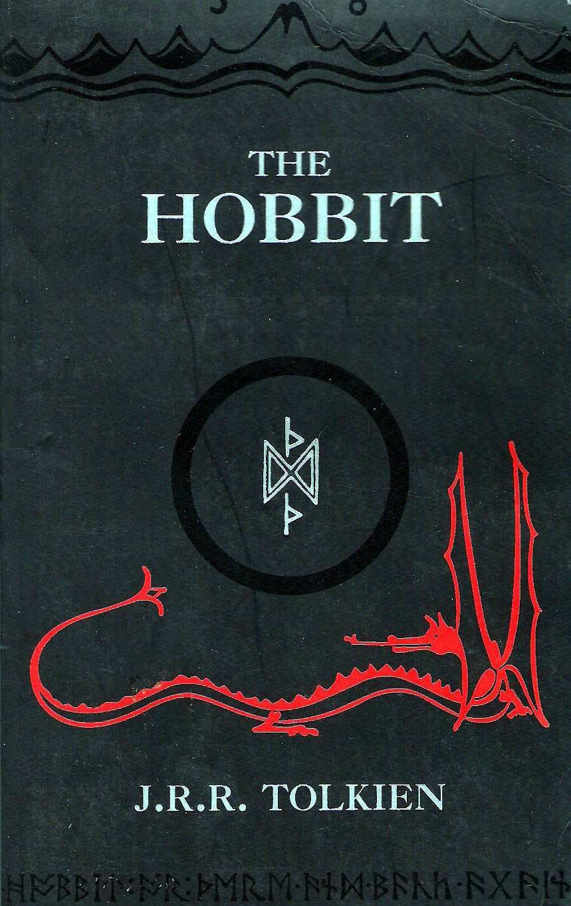

The Hobbit (Book 0)
Synopsis
Bilbo Baggins is a hobbit who enjoys a comfortable, unambitious life, rarely traveling any farther than his pantry or cellar. But his contentment is disturbed when the wizard Gandalf and a company of dwarves arrive on his doorstep one day to whisk him away on an adventure. They have launched a plot to raid the treasure hoard guarded by Smaug the Magnificent, a large and very dangerous dragon. Bilbo reluctantly joins their quest, unaware that on his journey to the Lonely Mountain he will encounter both a magic ring and a frightening creature known as Gollum.
Download PDF- 01 - An Unexpected Party
- 02 - Roast Mutton
- 03 - A Short Rest
- 04 - Over Hill & Under Hill
- 05 - Riddles in the Dark
- 06 - Out of the Frying Pan, Into the Fire
- 07 - Queer Lodgings
- 08 - Flies & Spiders
- 09 - Barrels Out of Bond
- 10 - A Warm Welcome
- 11 - On the Doorstep
- 12 - Inside Information
- 13 - Not at Home
- 14 - Fire and Water
- 15 - The Gathering of the Clouds
- 16 - A Thief in the Night
- 17 - The Clouds Burst
- 18 - The Return Journey
- 19 - The Last Stage